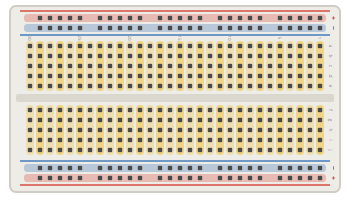
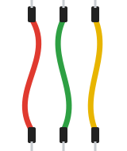

O que é uma protoboard?
A protoboard (ou breadboard) é uma placa cheia de furos com contatos metálicos por dentro, usada para montar circuitos temporários sem solda. Componentes e jumpers são apenas encaixados nos furos, o que permite testar, corrigir e alterar o projeto rapidamente antes de montá-lo em uma placa definitiva.

Em destaque, os furos que estão ligados entre si por dentro da placa.
Como funciona
Por baixo dos furos existem tiras de metal que ligam alguns furos entre si. Quando encaixamos duas pernas de componentes em furos da mesma tira, elas ficam eletricamente conectadas, sem solda.
As linhas numeradas são formadas por 5 furos ligados (a–e) e outros 5 furos ligados (f–j). O canal central separa os dois lados, e por isso os circuitos integrados são encaixados “a cavalo” sobre ele.
Nas laterais ficam as trilhas de alimentação: a vermelha (+) e a azul (−) percorrem a placa no comprimento. Ligamos o 5V e o GND do Arduino nelas e distribuímos para o circuito.

Tipos
830 pontos
Tamanho completo, com duas trilhas de alimentação de cada lado.
400 pontos
Meia protoboard, a mais comum nos kits. É a usada nos esquemas da oficina.
170 pontos (mini)
Sem trilhas de alimentação, para circuitos bem pequenos.
Com base
Montada sobre uma placa com bornes para fonte externa.
Ficha técnica
- Furos com espaçamento de 2,54 mm (padrão dos componentes)
- Linhas: 5 furos ligados de cada lado do canal central
- Trilhas de alimentação: ligadas no comprimento
- Atenção: em algumas protoboards grandes, as trilhas são interrompidas no meio
- Use fios rígidos ou jumpers de ponta fina; fios grossos alargam os contatos
Montagem dos componentes

Primeiro circuito na protoboard: um LED externo piscando no pino 13.
Você vai precisar de
- 1× Arduino Uno R3 + cabo USB
- 1× Protoboard
- 1× LED 5 mm
- 1× Resistor de 220 Ω
- 2× Jumpers macho-macho
Ligações
| Pino 13 | Perna longa (+) do LED |
|---|---|
| Perna curta (−) do LED | Resistor de 220 Ω → trilha (−) |
| GND | Trilha (−) |
#< código exemplo >
Faz o LED externo piscar duas vezes por segundo. Se não acender, confira se a perna longa está na mesma linha do fio que vem do pino 13.
/*
Oficina de Robótica SELFÍS — Componente: Protoboard
Exemplo: primeiro circuito na protoboard — um LED externo piscando.
Ligações: pino 13 -> perna longa do LED | perna curta -> resistor 220 ohms -> GND
*/
const int PINO_LED = 13;
void setup() {
pinMode(PINO_LED, OUTPUT);
}
void loop() {
digitalWrite(PINO_LED, HIGH); // LED aceso
delay(500);
digitalWrite(PINO_LED, LOW); // LED apagado
delay(500);
}
💡 Teste primeiro no Tinkercad (Circuitos → Código → Texto → cole o código → Iniciar simulação). Depois carregue na placa real pela Arduino IDE.